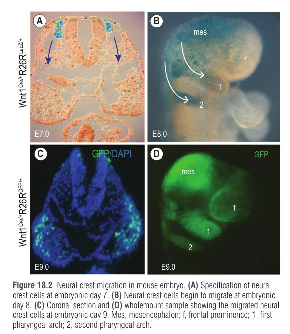
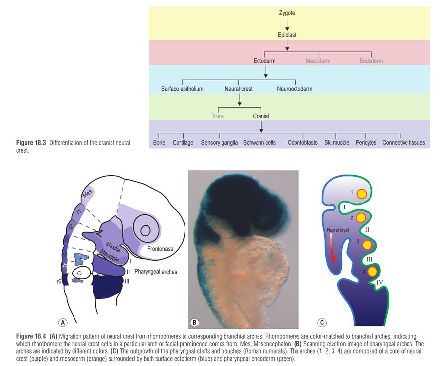
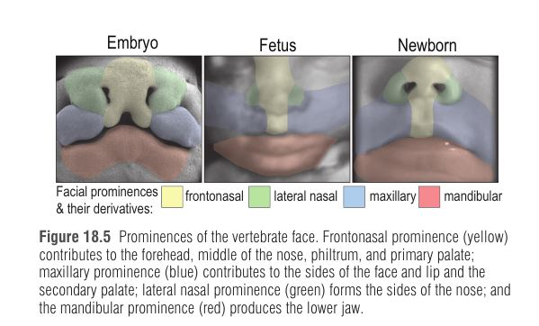
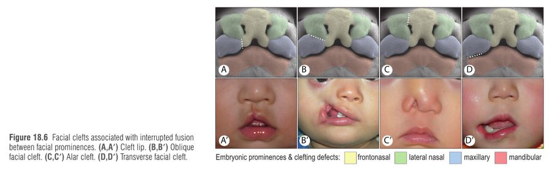
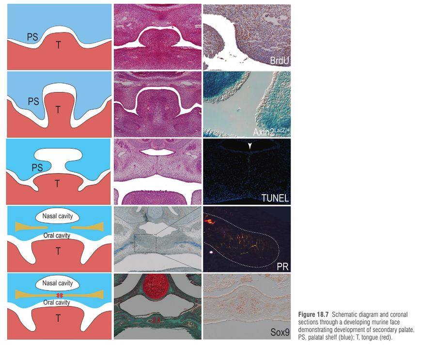
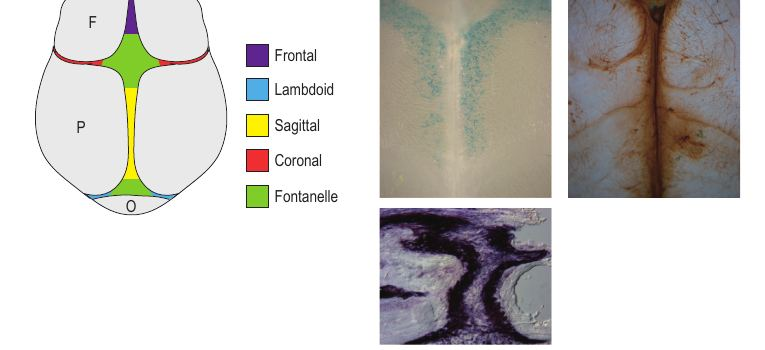
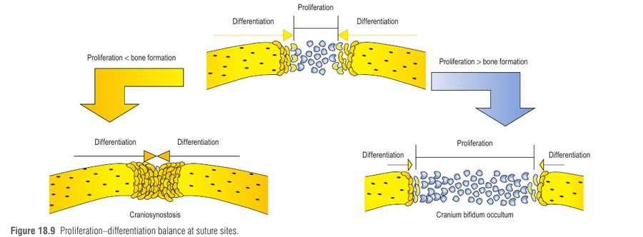

הפרק מסביר איך נבנים הפנים והגולגולת, ומראה שרוב המומים הקרניופציאליים הם תקלה ברגע מוגדר באותה שרשרת התפתחותית: איתות מולקולרי ← נדידת תאי ציצת העצב ← צמיחת בליטות ← איחוי. מי שמבין את השרשרת יכול לנחש איזה מום יגיע מכל חוליה שבורה, וזה בדיוק מה ששואלים במבחן.
זיגוטה ← מורולה ← בלסטוציסט (blastocyst) = טרופובלסט (שליה) + אמבריובלסט (העובר). בשבוע 3 מתרחשת גסטרולציה (gastrulation): תאים זורמים דרך ה-primitive streak ועוברים ליד Hensen's node, שם הם נחשפים למורפוגנים שקובעים את גורלם. התוצאה: 3 שכבות נבט (אקטודרם, מזודרם, אנדודרם). נורולציה (neurulation) יוצרת את שכבת הנבט הרביעית – ציצת העצב (neural crest).
בצלחת העצבית הקדמית האיתותים מסדרים את ציר אמצע–צד:
| איתות | איפה | תפקיד | אם נכשל |
|---|---|---|---|
| SHH (Sonic hedgehog) | קו האמצע של הצלחת הקדמית | מדכא את PAX6 (רגולטור-על של העין) באמצע ← שדה עין יחיד מתפצל לשניים | PAX6 נשאר באמצע ← הולופרוזנצפליה (HPE): ציקלופיה, פרובוסיס, היפוטלוריזם, ובמיקרו-צורה חותך מרכזי יחיד |
| BMP | שולי הצלחת (צדדי/גבי) | מבדיל נוירואקטודרם מול אקטודרם לא-עצבי; מגדיר את גג המוח הקדמי | BMP עודף חודר לאמצע ומפריע ל-SHH ← היצרות מידפייס, מיקרו-צורה של HPE |
| WNT | קפלים עצביים (neural folds) | מניע יצירת ציצת עצב (Slug, Sox9, FoxD3) | חסימת WNT ← ציצת העצב לא נוצרת |
HPE = קריסה של הצמיחה המדיו-לטרלית (אובדן SHH בקו האמצע). הפנים "מתכווצות" לכיוון אמצע: עיניים קרובות, אף חסר או פרובוסיס, חותך אחד.
בשולי הקפלים העצביים תאי אפיתל עמודיים מתנתקים ועוברים EMT (epithelial-to-mesenchymal transition) ← הופכים למזנכימה נודדת. הם חולקים עם תאי גרורה סרטניים את ה-EMT ואת היכולת הפולשנית; הגורם Slug פעיל בנדידה ומושתק אחריה, ובגידולים פולשניים הוא נשאר פעיל. לכן הביולוגיה של ציצת העצב מסבירה גם גרורות.
בראש, ציצת העצב נותנת: עצם וסחוס של הפנים, שיניים (אודונטובלסטים), רקמות חיבור, מלנוציטים, פריציטים של כלי דם, שומן ושרירים תוך-עיניים. בגזע היא נותנת נוירונים תחושתיים וגליה, כולל מערכת העצבים של המעי. התאים מתמיינים לפי "חתימות" אפיגנטיות של אנהנסרים.

כשל ביצירה, נדידה או התמיינות של ציצת העצב. דוגמאות: Treacher Collins, מחיקת 22q11.2, מחלת Hirschsprung, נוירובלסטומה, נוירופיברומטוזיס. שני גנים לדוגמה:
הקשתות הן חומר הגלם של הפנים והצוואר: ליבה של ציצת עצב + מזודרם, עטופה באקטודרם חיצוני ובאנדודרם הלועי. הקשתות מופיעות מקדימה לאחור: קשת 1 ביום 22, קשתות 2 ו-3 ביום 24, קשתות 4 ו-6 ביום 29. הפנים נגזרות בעיקר מקשת 1, שמתפצלת לבליטה מקסילרית (לסת עליונה) ומנדיבולרית (לסת תחתונה). קשת 2 (היואיד) משמשת תמיכה.
| קשת | שלד | שריר | עצב | עורק |
|---|---|---|---|---|
| 1 | Incus, malleus, זיגומה, חלק מהטמפורלי, מנדיבולה, מקסילה | שרירי לעיסה | V (טריגמינלי) | מקסילרי |
| 2 (היואיד) | Stapes, תהליך סטילואידי, ליגמנט סטילוהיואידי, גוף וקרן קטנה של היואיד | הבעת פנים | VII (פציאלי) | סטפדיאלי |
| 3 | קרן גדולה וחלק תחתון של היואיד | סטילופרינגאוס | IX | קרוטיד משותף / פנימי |
| 4+6 | סחוסי הגרון | מכווצי לוע, שרירי פונציה, palatoglossus, חלק עליון של הוושט | X (ואגוס) | קשת האאורטה, סאבקלביה ימנית, ductus, עורקי ריאה |
השסעים (clefts) והכיסים: שסע 1 ← חלק מהאוזן התיכונה והעור של עור התוף; שסע 2 ← חלק מהאוזן התיכונה ושקד הלוע; 3 ← פארה-תירואיד תחתון וטימוס; 4 ← פארה-תירואיד עליון וטימוס (ולצד שסע 6, שרירי וסחוסי גרון). לשונית: ה-2/3 הקדמיים של הלשון מקשת 1, שורש הלשון, אפיגלוטיס ותירואיד מקשת 3.

קשת 1 ← לעיסה (V), קשת 2 ← חיוך (VII), קשת 3 ← בליעה (IX), קשת 4+6 ← דיבור (X). דמייני פנים של ילד שלועס פיצה, מחייך אל המצלמה, בולע ואז מדבר. שרירי העצב קשורים לפעולה של הקשת.
הקשתות בסדר ההופעה: מימין לשמאל, קשת 1 עד 4+6.
עיקרון: חסר בתאי ציצת העצב (נדידה פגומה, פרוליפרציה לא מספקת, מוות תאי מוגבר) ← קשתות קטנות ← מבנים תת-מפותחים.
| מיקרוסומיה קרניופציאלית (CFM) | דיסוסטוזיס מנדיבולופציאלית (למשל Treacher Collins) | |
|---|---|---|
| התפלגות | א-סימטרית, בדרך כלל חד-צדדית | סימטרית דו-צדדית |
| מבנים | אוזן חיצונית ותיכונה, מנדיבולה, זיגומה, מקסילה, טמפורלי, שרירי הבעה ולעיסה, בלוטת פרוטיד, לשון; מצבים קלים: תוספות עור מול האוזן; חמורים: מיקרוטיה, מיקרופטלמיה, היפופלזיה מנדיבולרית שמסכנת נתיב אוויר | היפופלזיה של לסת תחתונה וזיגומה, מיקרוטיה, מקרוסטומיה |
| אטיולוגיה | לרוב לא ידועה. גורמי סיכון: תרופות וסואקטיביות אצל האם, סוכרת, דימום בטרימסטר 2. השערה: איסכמיה משנית לפגם בעורק הסטפדיאלי ← פחות פרוליפרציה | Treacher Collins: אוטוזומלי דומיננטי, מוטציה ב-TCOF1 (חלבון Treacle) ← פגיעה ביצירה ופרוליפרציה של ציצת העצב |
22q11.2 deletion (DiGeorge): שסע חיך, מומי לב, חסר או היפופלזיה של נגזרות שקעים 3-4 (טימוס, פארה-תירואיד). הגורם: הפלואינסופיציינסי של TBX1. הנקודה העמוקה: ה-TBX1 לא נדרש בתאי ציצת העצב עצמם, אלא באנדודרם של הכיסים, שמספק לתאי העצב סימני הכוונה לנדידה. המסקנה: הנדידה תלויה באותות מהרקמות הסובבות.
צורת הפנים נקבעת בשבועות 4–10 מהתאחדות של בליטה פרונטו-נזלית חד (אמצעית) ושלושה זוגות: מקסילרית, לטרלית-נזלית ומנדיבולרית. כל בליטה מלאה בתאי ציצת עצב, וצמיחה דיפרנציאלית ביניהן קובעת את הצורה הסופית.
| בליטה | נגזרות |
|---|---|
| פרונטו-נזלית (אמצעית) | מצח, אמצע האף, פילטרום, מחיצה, אמצע השפה העליונה, חיך ראשוני |
| מקסילרית (קשת 1) | לחי עליונה, צד השפה העליונה, מקסילה, חיך משני (חלק אחורי) |
| לטרלית-נזלית | כנפי האף (alae); גדלה פחות עם הזמן מכיוון שהפרוליפרציה שלה יורדת |
| מנדיבולרית (קשת 1) | לחי תחתונה, שפה תחתונה, מנדיבולה, רצפת הפה, הסנטר, חלק מהאוזן התיכונה, 2/3 קדמיים של הלשון. החריץ באמצע נסגר בהתרבות מזנכימה |

כשהבליטות נוגעות, האפיתל שמכסה אותן עובר הידבקות ואז איחוי: השכבות העליונות של האקטודרם "מתקלפות" (מוות תאי מתוכנן) ונשארת שכבה בזלית, והחיבורים מתחזקים בדסמוזומים. אם הצמיחה או האיחוי נכשלים ← שסע. מוטציה ב-IRF6 גורמת להידבקויות לא תקינות בין מדפי החיך ללשון ולשסעי חיך.
| בליטות שלא התאחדו | סוג השסע |
|---|---|
| פרונטו-נזלית + מקסילרית | שסע שפה (cleft lip) |
| לטרלית-נזלית + מקסילרית | שסע פנים אלכסוני (oblique) |
| פרונטו-נזלית + לטרלית-נזלית | שסע אלרי (alar) |
| מקסילרית + מנדיבולרית | שסע רוחבי (transverse, macrostomia) |
שסעי קו אמצע (שפה עליונה או תחתונה) נדירים.

החיך המשני נוצר ממדפי החיך (palatal shelves) של הבליטות המקסילריות. תאי ציצת עצב מתעבים בתוכם ועוברים אוסיפיקציה אינטרממברנוזית. המדפים נמצאים תחילה אנכית משני צדי הלשון, אחר כך מסתובבים לאופקי מעל הלשון ומתאחדים. כדי להתאחד צריך להסיר אפיתל רק מהקצה המדיאלי: זה ה-MEE (medial edge epithelium); כשהמדפים נוגעים הוא נקרא MES (midline epithelial seam), ומוסר בתהליך MET (מזנכימה לאפיתל, ההפך מ-EMT) ובמוות תאי, כך שהמזנכימה של שני המדפים מתחברת.
שרשרת הפלטוגנזה, מימין לשמאל, והקשר בין מועד הכשל לחומרת השסע.
ככל שהכשל מוקדם יותר, השסע שלם וחמור יותר. פרוליפרציה נמוכה במקסילה ← מדפים קטנים ← שסע שלם (חוסר רקמה). מדפים בגודל תקין עם הסרה לקויה של ה-MEE ← שסע חלקי או של רקמה רכה בלבד.

| בסיס הגולגולת (basicranium) | קודקוד (calvarium) | |
|---|---|---|
| עצמות | ספנואיד, אתמואיד, חלקי טמפורלי (מסטואיד, פטרוס), בסיס העורף | 7 עצמות: frontal, squamosal, parietal (זוגיות), occipital |
| מקור | מזודרם (סומיטות עורפיות) | ציצת עצב (לפי הפרק) |
| התגרמות | אנדוכונדרלית (תבנית סחוס ← החלפה בעצם) | אינטרממברנוזית, ללא סחוס. העורף מעורב: תחתון אנדוכונדרלי, עליון אינטרממברנוזי |
תפרים: פרונטלי, סגיטלי, קורונלי, למבדואידי. נשארים פתוחים כי הרקמה שבאמצע התפר נשארת בלתי-מובחנת בזמן שתאים בקצוות העצמות מתמיינים לאוסטאובלסטים ומוסיפים עצם. הצמיחה מונעת מהתרחבות המוח (הוא ממשיך לגדול עד הבגרות הצעירה).
איזון פרוליפרציה/התמיינות בתפר: התמיינות מוקדמת מדי (פרוליפרציה ↓ מול יצירת עצם) ← קרניוסינוסטוזיס. פרוליפרציה עודפת / התמיינות חסרה ← cranium bifidum occultum (רקמה סיבית ללא עצם, כמו ב-cleidocranial dysplasia ובדיספלזיות פרונטונזליות).


יילוד עם שסע שפה וחיך דו-צדדי, מומי לב, וקושי בשליטה בסידן בימים הראשונים. בבדיקה אוזניים מעט נמוכות וקטנות. בבירור: מחיקה 22q11.2. במקביל, תינוק אחר עם עיניים קרובות מאוד, אף חסר וחותך מרכזי יחיד, וילדה שלישית עם היפופלזיה בצד ימין של הלסת והאוזן, תוספות עור מול האוזן ואוזן קטנה, ושאר פנים בצד שמאל תקין.